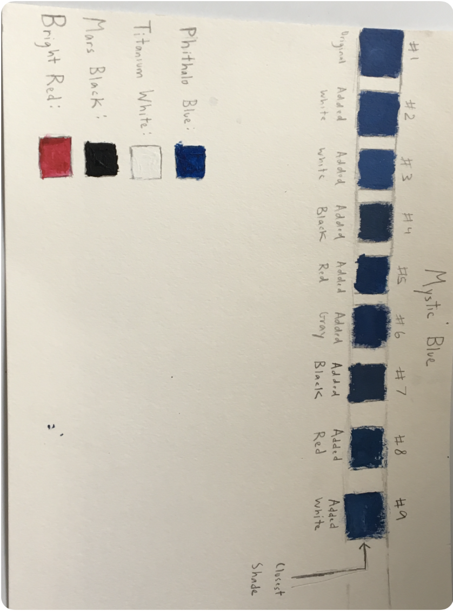

Color Swatch

Medium: Acrylic on Watercolor Paper
In this assignment, we had to try and use our pick of the three primary colors, along with tint, tone and shade, to try and replicate the color which we had named in our Color Research Handout. This was a really fun experience, but frustrating. Over the course of two classes, I mixed red, blue, black and white in different ways to try and replicate my color. After 9 tries, I finally got it. This lesson was a really good experience for learning how colors mix and how we can control that.